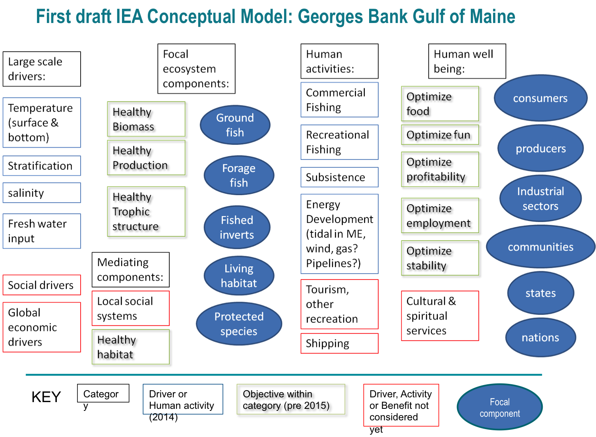

18 Conceptual Models
Description: Conceptual models for the New England (Georges Bank and Gulf of Maine) and Mid-Atlantic regions of the Northeast US Large Marine Ecosystem
Found in: State of the Ecosystem - Gulf of Maine & Georges Bank (2018+), State of the Ecosystem - Mid-Atlantic (2018+)
Indicator category: Synthesis of published information, Extensive analysis; not yet published
Contributor(s): Sarah Gaichas, Patricia Clay, Geret DePiper, Gavin Fay, Michael Fogarty, Paula Fratantoni, Robert Gamble, Sean Lucey, Charles Perretti, Patricia Pinto da Silva, Vincent Saba, Laurel Smith, Jamie Tam, Steve Traynor, Robert Wildermuth
Data steward: Sarah Gaichas, sarah.gaichas@noaa.gov
Point of contact: Sarah Gaichas, sarah.gaichas@noaa.gov
Public availability statement: All source data aside from confidential commercial fisheries data (relevant only to some components of the conceptual models) are available to the public (see Data Sources below).
18.1 Methods
Conceptual models were constructed to facilitate multidisciplinary analysis and discussion of the linked social-ecological system for integrated ecosystem assessment. The overall process was to first identify the components of the model (focal groups, human activities, environmental drivers, and objectives), and then to document criteria for including groups and linkages and what the specific links were between the components.
The prototype conceptual model used to design Northeast US conceptual models for each ecosystem production unit (EPU) was designed by the California Current IEA program. The California Current IEA developed an overview conceptual model for the Northern California Current Large Marine Ecosystem (NCC), with models for each focal ecosystem component that detailed the ecological, environmental, and human system linkages. Another set of conceptual models outlined habitat linkages.
An inital conceptual model for Georges Bank and the Gulf of Maine was outlined at the 2015 ICES WGNARS meeting. It specified four categories: Large scale drivers, focal ecosystem components, human activities, and human well being. Strategic management objectives were included in the conceptual model, which had not been done in the NCC. Focal ecosystem components were defined as aggregate species groups that had associated US management objectives (outlined within WGNARS for IEAs, see DePiper et al. (2017)): groundfish, forage fish, fished invertebrates, living habitat, and protected species. These categories roughly align with Fishery Managment Plans (FMPs) for the New England Fishery Management Council. The Mid-Atlantic conceptual model was developed along similar lines, but the focal groups included demersals, forage fish, squids, medium pelagics, clams/quahogs, and protected species to better align with the Mid Atlantic Council’s FMPs.

After the initial draft model was outlined, working groups were formed to develop three submodels following the CCE example: ecological, environmental, and human dimensions. The general approach was to specify what was being included in each group, what relationship was represented by a link between groups, what threshold of the relationship was used to determine whether a relationship was significant enough to be included (we did not want to model everything), the direction and uncertainty of the link, and documentation supporting the link between groups. This information was recorded in a spreadsheet. Submodels were then merged together by common components using the “merge” function in the (currently unavailable) desktop version of Mental Modeler (http://www.mentalmodeler.org/#home; Gray et al. (2013)). The process was applied to Georges Bank (GB), the Gulf of Maine (GOM), and the Mid-Atlantic Bight (MAB) Ecological Production Units.
18.1.1 Data sources
18.1.1.1 Ecological submodels
Published food web (EMAX) models for each subregion (J. S. Link et al. 2006; Jason Link et al. 2008), food habits data collected by NEFSC trawl surveys (B. E. Smith and Link 2010), and other literature sources (L. A. Smith et al. 2015) were consulted. Expert judgement was also used to adjust historical information to current conditions, and to include broad habitat linkages to Focal groups.
18.1.1.2 Environmental submodels
Published literature on the primary environmental drivers (seasonal and interannual) in each EPU was consulted.
Sources for Georges Bank included Backus and Bourne (1987) and Townsend et al. (2006).
Sources for the Gulf of Maine included Peter C. Smith (1983), Peter C. Smith et al. (2001), Mupparapu and Brown (2002), Townsend et al. (2006), Peter C. Smith et al. (2012), and David G. Mountain (2012b).
Sources for the Mid Atlantic Bight included Houghton et al. (1982), Beardsley et al. (1985), Lentz (2003), David G. Mountain (2003), Glenn et al. (2004), Sullivan, Cowen, and Steves (2005), Castelao et al. (2008), Shearman and Lentz (2009), Castelao, Glenn, and Schofield (2010), Gong, Kohut, and Glenn (2010), Gawarkiewicz et al. (2012), Forsyth, Andres, and Gawarkiewicz (2015), Fratantoni, Holzwarth-Davis, and Taylor (2015), W. G. Zhang and Gawarkiewicz (2015), Timothy J. Miller, Hare, and Alade (2016), and Lentz (2017).
18.1.1.3 Human dimensions submodels
Fishery catch and bycatch information was drawn from multiple regional datasets, incuding the Greater Atlantic Regional Office Vessel Trip Reports & Commercial Fisheries Dealer databases, Northeast Fishery Observer Program & Northeast At-Sea Monitoring databases, Northeast Fishery Science Center Social Sciences Branch cost survey, and the Marine Recreational Informational Program database. Further synthesis of human welfare derived from fisheries was drawn from Färe, Kirkley, and Walden (2006), Walden et al. (2012), Lee and Thunberg (2013), Lee (2014), and Lee, Steinback, and Wallmo (2017). Bycatch of protected species was taken from Waring et al. (2015), with additional insights from Bisack and Magnusson (2014). The top 3 linkages were drawn for each node. For example, the top 3 recreational species for the Mid-Atlantic were used to draw linkages between the recreational fishery and species focal groups. A similar approach was used for relevant commercial fisheries in each region.
Habitat-fishery linkages were drawn from unpublished reports, including:
Mid-Atlantic Fishery Management Council. 2016. Amendment 16 to the Atlantic Mackerel, Squid, and Butterfish Fishery Management Plan: Measures to protect deep sea corals from Impacts of Fishing Gear. Environmental Assessment, Regulatory Impact Review, and Initial Regulatory Flexibility Analysis. Dover, DE. August, 2016.
NOAA. 2016. Deep sea coral research and technology program 2016 Report to Congress. http://www.habitat.noaa.gov/protection/corals/deepseacorals.html retrieved February 8, 2017.
New England Fishery Management Council. 2016. Habitat Omnibus Deep-Sea Coral Amendment: Draft. http://www.nefmc.org/library/omnibus-deep-sea-coral-amendment Retrieved Feb 8, 2017.
Bachman et al. 2011. The Swept Area Seabed Impact (SASI) Model: A Tool for Analyzing the Effects of Fishing on Essential Fish Habitat. New England Fisheries Management Council Report. Newburyport, MA.
Tourism and habitat linkages were drawn from unpublished reports, including:
Great Bay (GoM) resources http://greatbay.org/about/publications.htm
Meaney, C.R. and C. Demarest. 2006. Coastal Polution and New England Fisheries. Report for the New England Fisheries Management Council. Newburyport, MA.
List of valuation studies, by subregion and/or state, can be found at http://www.oceaneconomics.org/nonmarket/valestim.asp.
Published literature on human activities in each EPU was consulted.
Sources for protected species and tourism links included Hoagland and Meeks (2000) and Lee (2010).
Sources for links between environmental drivers and human activities included Adams (1973), Matzarakis and Freitas (2001), Scott, McBoyle, and Schwartzentruber (2004), Hess, Malilay, and Parkinson (2008), Colburn and Jepson (2012), Jepson and Colburn (2013), and Colburn et al. (2016).
Sources for cultural practices and attachments links included Daniel Pauly (1997), McGoodwin (2001), St Martin (2001), Norris-Raynbird (2004), Pollnac et al. (2006), Clay and Olson (2007), Clay and Olson (2008), Everett and Aitchison (2008), Donkersloot (2010), Lord (2011), Halpern et al. (2012), Wynveen, Kyle, and Sutton (2012), Cortes-Vazquez and Zedalis (2013), Koehn, Reineman, and Kittinger (2013), Potschin and Haines-Young (2013), Reed et al. (2013), Urquhart and Acott (2013), Blasiak et al. (2014), Klain, Satterfield, and Chan (2014), Poe, Norman, and Levin (2014), Brown (2015), Donatuto and Poe (2015), Khakzad and Griffith (2016), Oberg et al. (2016), and Seara, Clay, and Colburn (2016).
18.1.2 Data extraction
18.1.2.1 Ecological submodels
“Data” included model estimated quantities to determine whether inclusion thresholds were met for each potential link in the conceptual model. A matrix with diet composition for each modeled group is an input to the food web model. A matrix of mortalities caused by each predator and fishery on each modeled group is a direct ouput of a food web model (e.g. Ecopath). Food web model biomasss flows between species, fisheries, and detritus were summarized using algorithms implemented in visual basic by Kerim Aydin, NOAA NMFS Alaska Fisheries Science Center. Because EMAX model groups were aggregated across species, selected diet compositions for individual species were taken from the NEFSC food habits database using the FEAST program for selected species (example query below). These diet queries were consulted as supplemental information.
Example FEAST sql script for Cod weighted diet on Georges Bank can be found here. Queries for different species are standardized by the FEAST application and would differ only in the svspp code.
18.1.2.2 Environmental submodels
Information was synthesized entirely from published sources and expert knowledge; no additional data extraction was completed for the environmental submodels.
18.1.2.3 Human dimensions submodels
Recreational fisheries data were extracted from the 2010-2014 MRIP datasets. Original data can be found here for each region (New England or Mid-Atlantic as defined by states).
Commercial fishing data was developed as part of the State of the Ecosystem Report, including revenue and food production estimates, with data extraction metodology discussed in the relevant sections of the technical document. In addition, the Northeast Regional Input/Output Model (Steinback and Thunberg 2006) was used as the basis for the strength of the employment linkages.
18.1.3 Data analysis
18.1.3.1 Ecological submodels
Aggregated diet and mortality information was examined to determine the type of link, direction of link, and which links between which groups should be inclded in the conceptual models. Two types of ecological links were defined using food web models: prey links and predation/fishing mortality links. Prey links resulted in positve links between the prey group and the focal group, while predation/fishing mortality links resulted in negative links to the focal group to represent energy flows. The intent was to include only the most important linkages between focal groups and with other groups supporting or causing mortality on focal species groups. Therefore, threshold levels of diet and mortality were established (based on those that would select the top 1-3 prey and predators of each focal group): 10% to include a link (or add a linked group) in the model and 20% to include as a strong link. A Primary Production group was included in each model and linked to pelagic habitat to allow environmental effects on habitat to be connected to the ecologial submodel. Uncertainty for the inclusion of each link and for the magnitude of each link was qualitatively assessed and noted in the spreadsheet.
Four habitat categories (Pelagic, Seafloor and Demersal, Nearshore, and Freshwater and Estuarine) were included in ecological submodels as placeholders to be developed further along with habitat-specific research. Expert opinion was used to include the strongest links between each habitat type and each Focal group (noting that across species and life stages, members of these aggregate groups likely occupy many if not all of the habitat types). Link direction and strength were not specified. Environmental drivers were designed to link to habitats, rather than directly to Focal groups, to represent each habitat’s important mediation function.
EMAX model groups were aggregated to focal groups for the Georges Bank (GB), Gulf of Maine (GOM) and Mid-Atlantic Bight (MAB) conceptual models according to Table 18.1. “Linked groups” directly support or impact the Focal groups as described above.
| Group Type | Region | Conceptual model group | EMAX group(s) |
|---|---|---|---|
| Focal | GB | Commercial Fishery | Fishery |
| Focal | GB | Fished Inverts | Megabenthos filterers |
| Focal | GB | Forage Fish | Sum of Small pelagics-commercial, other, anadromous, and squids |
| Focal | GB | Groundfish | Sum of Demersals-omnivores, benthivores, and piscivores |
| Focal | GB | Protected Species | Sum of Baleen Whales, Odontocetes, and Seabirds |
| Linked | GB | Benthos | Sum of Macrobenthos-polychaetes, crustaceans, molluscs, other and Megabenthos-other |
| Linked | GB | Copepods and Micronecton | Sum of Copepods-small and large, and Micronekton |
| Linked | GB | Detritus and Bacteria | Sum of Bacteria and Detritus-POC |
| Linked | GB | Gelatinous zooplankton | Gelatinous zooplankton |
| Linked | GB | Primary Production | Phytoplankton-Primary production |
| Focal | GOM | Commercial Fishery | Fishery |
| Focal | GOM | Fished Inverts | Megabenthos filterers |
| Focal | GOM | Forage Fish | Sum of Small pelagics-commercial, other, anadromous, and squids |
| Focal | GOM | Groundfish | Sum of Demersals-omnivores, benthivores, and piscivores |
| Focal | GOM | Protected Species | Sum of Baleen Whales, Odontocetes, Pinnipeds, and Seabirds |
| Linked | GOM | Benthos | Sum of Macrobenthos-polychaetes, crustaceans, molluscs, other and Megabenthos-other |
| Linked | GOM | Copepods and Micronecton | Sum of Copepods-small and large, and Micronekton |
| Linked | GOM | Detritus and Bacteria | Sum of Bacteria and Detritus-POC |
| Linked | GOM | Gelatinous zooplankton | Gelatinous zooplankton |
| Linked | GOM | Primary Production | Phytoplankton-Primary production |
| Focal | MAB | Clams Quahogs | Megabenthos filterers |
| Focal | MAB | Commercial Fishery | Fishery |
| Focal | MAB | Demerals | Sum of Demersals-omnivores, benthivores, and piscivores |
| Focal | MAB | Forage Fish | Sum of Small pelagics-commercial, other, and anadromous |
| Focal | MAB | Medium Pelagics | Medium pelagics |
| Focal | MAB | Protected Species | Sum of Baleen whales and Odontocetes |
| Focal | MAB | Squids | Small pelagics-squids |
| Linked | MAB | Benthos | Sum of Macrobenthos-polychaetes, crustaceans, molluscs, other |
| Linked | MAB | Copepods and Micronecton | Sum of Copepods-small and large, and Micronekton |
| Linked | MAB | Detritus and Bacteria | Sum of Bacteria and Detritus-POC |
| Linked | MAB | Gelatinous zooplankton | Gelatinous zooplankton |
| Linked | MAB | Primary Production | Phytoplankton-Primary production |
| Linked | MAB | Sharks | Sum of Sharks-pelagic and coastal |
Ecological submodels were constructed and visualized in Mental Modeler (Fig. 18.1). Here, we show only the Gulf of Maine submodels as examples.

Figure 18.1: Gulf of Maine Ecological submodel
18.1.3.2 Environmental submodels
Environmental submodels were designed to link key oceanographic processes in each ecosystem production unit to the four general habitat categories (Pelagic, Seafloor and Demersal, Nearshore, and Freshwater and Estuarine) with emphasis on the most important physical processes in each ecosystem based on expert knowledge as supported by literature review. The basis of each submodel were environmental variables observable at management-relevant scales as identified by WGNARS: Surface and Bottom Water Temperature and Salinity, Freshwater Input, and Stratification (as well as sea ice timing and cover, which is not relevant to the northeast US shelf). Key drivers changing these observable variables and thus structuring habitat dynamics in each Ecological Production Units were added to the model using expert consensus.
Environmental submodels were initially constructed and visualized in Mental Modeler (Fig. 18.2).Figure 18.2: Gulf of Maine Environmental submodel
18.1.3.3 Human dimensions submodels
The top 3 species from each mode of recreational fishing (shoreside, private boat, party/charter) were used to assess the potential for missing links between the recreational fishing activity and biological focal components. Given the predominance of Mid-Atlantic groundfish in recreational fishing off New England (summer flounder, bluefish, striped bass), a Mid-Atlantic groundfish focal component was added to the Georges Bank EPU model. The magnitude of benefits generated from recreational fishing was scaled to reflect expert knowledge of target species, coupled with the MRIP data highlighted above. Scales were held consistent across the focal components within recreational fishing.
No additional biological focal components were added to the commercial fishing activity, beyond what was developed in the ecological submodel. Benefits derived from commercial fishing were scaled to be consistent with the State of the Ecosystem revenue estimates, as modulated by expert knowledge and additional data sources. For example,the percentage of landings sold as food was used to map fishing activity to the commercial fishery food production objective, and the Northeast Regional Input/Output Model (Steinback and Thunberg 2006) was used to define the strength of the employment linkages. For profitability, expert knowledge was used to reweight revenue landings, based on ancillary cost data available (Das, Chhandita 2013, 2014). Human activities and objectives for the conceptual sub model are defined in DePiper et al. (2017). As shown in Figure 18.3, human dimensions submodels were also initially constructed and visualized in Mental Modeler.
Figure 18.3: Gulf of Maine Human dimensions submodel
18.1.3.4 Merged models
All links and groups from each submodel were preserved in the full merged model for each system. Mental modeler was used to merge the submodels. Full models were then re-drawn in Dia (http://dia-installer.de/) with color codes for each model component type for improved readability. Examples for each system are below.
Figure 18.4: Georges Bank conceptual model

Figure 18.5: Gulf of Maine conceptual model

Figure 18.6: Mid-Atlantic Bight conceptual model
18.1.3.5 Communication tools
The merged models were redrawn for use in communications with the public. These versions lead off the State of the Ecosystem reports for both Fishery Management Councils to provide an overview of linkages between environmental drivers, ecological, and human systems.

Figure 18.7: New England conceptual model for public communication
Figure 18.8: Mid-Atlantic conceptual model for public communication